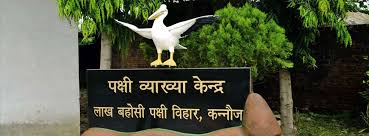
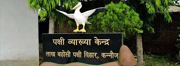
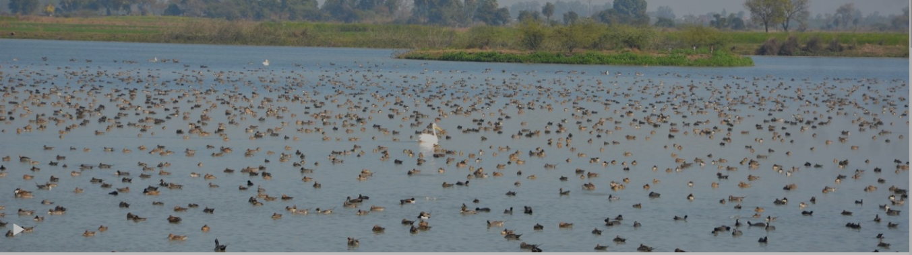
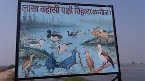
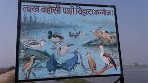

LAKH BAHOSI SANCTURY


Lakh Bahosi Sanctuary is a bird sanctuary spread over two jheels (shallow lakes) near the villages of Lakh and Bahosi (abt 4 km apart) in Kannauj district, Uttar Pradesh. It is about 40 km from Kannauj. Primarily a bird sanctuary, species from 49 genera (of the 97 inhabiting India) can be seen at the sanctuary. It is one of India's larger bird sanctuaries, covering 80 km2 including also a stretch of the Upper Ganges canal. (Lat/Long: 2654'47.50"N 7939'19.20")

Lakh-Bahosi is 5 km from Indergarh Police Station. It is about 35 km from Kannauj , bus stand on the Grand Trunk Road (NH91) - the road turns right at the canal just past Tirwa (10 km distant from tirwa)(abt 15 km from Kannauj). It's about 90 km from Kanpur.
Spread over 3 km2 beside the Bahosi Lake, the sanctuary is home to various migratory birds from November to March. Jackal, blue bull, mongoose, fishing cat and monkeys may also be spotted here.
 A separate lake at nearby Lakh village hosts some similar species, though the relative ecology is somewhat different.
The best time to visit is December to February.

A separate lake at nearby Lakh village hosts some similar species, though the relative ecology is somewhat different.
The best time to visit is December to February.
